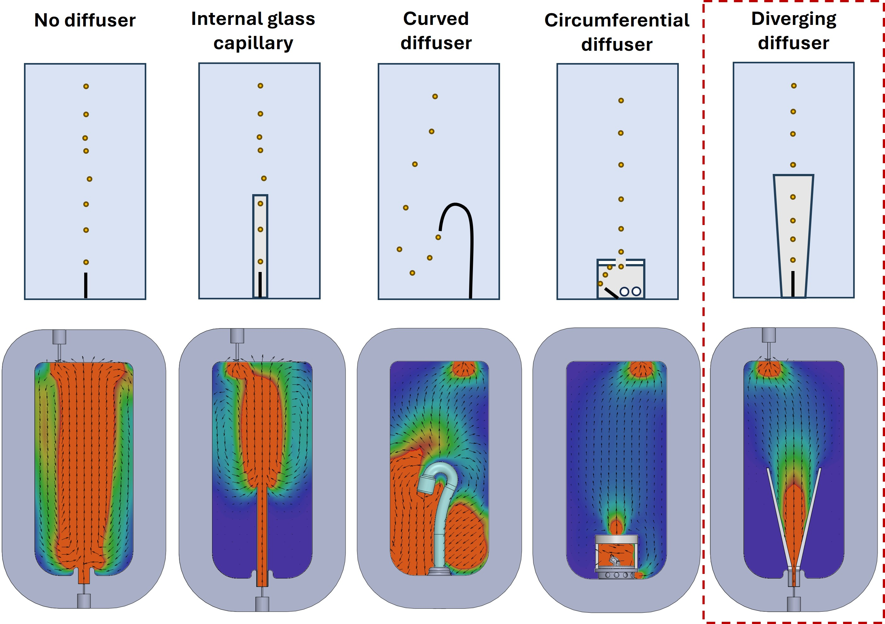
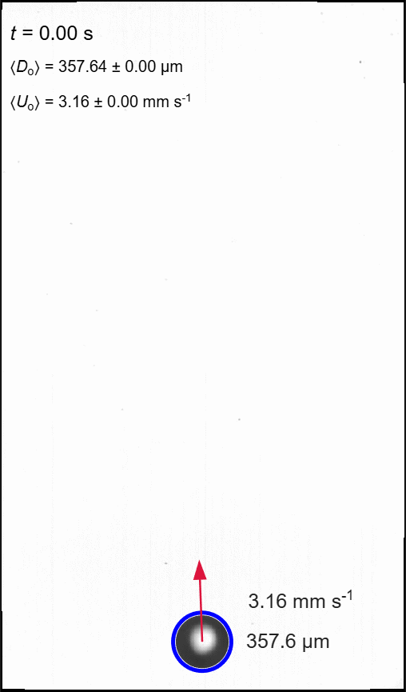

Precise Control of Microdroplet Rise
The incoming carrier-water stream formed a persistent laminar jet that accelerated the droplets and delayed their recovery to steady rise. I therefore evaluated four flow-conditioning concepts, progressing from simple modifications of the injection line to purpose-designed internal diffusers.
The first concept used an internal glass capillary to confine and damp the incoming flow. Although this reduced the jet velocity by approximately 40 to 50%, the remaining momentum was still too high: the predicted recovery distance remained comparable to, or greater than, one metre, far exceeding the practical observation length.
I next extended the injection line into the liquid cell and directed its outlet downwards. Several outlet angles were evaluated, but the droplets frequently reached the bottom of the cell before reversing direction. Their subsequent trajectories were highly variable, preventing reliable axial tracking and terminal-velocity measurement.
The third concept was a circumferential diffuser comprising a cylindrical chamber with distributed radial openings and a central outlet at the top. Parametric studies were used to determine the number and diameter of the circumferential holes and the size of the upper opening. The optimised geometry reduced the carrier-flow momentum to nearly the minimum attainable within the cell.
However, experimental testing revealed a limitation that was not evident from the single-phase flow analysis. As the droplets exited through the upper opening, their trajectories became disordered, and some contacted and adhered to the surrounding glass surface. Over time, the retained droplets accumulated, coalesced, and obstructed the outlet, making sustained measurements impossible. This result showed that reducing the carrier-flow velocity alone was insufficient. A viable design also had to preserve droplet spacing, maintain an axial trajectory, and provide an unobstructed path into the observation region.
These findings informed the final diverging-diffuser design, which was developed to combine gradual flow deceleration with reliable droplet transmission. The final geometry reduced the influence of the injection jet without introducing recirculation, surface attachment, or outlet blockage, allowing droplets to recover steady rise behaviour within a few millimetres above the diffuser.
Engineering Challenge
The carrier water delivered the microdroplets into the observation cell as a persistent laminar jet. This background flow accelerated the droplets, promoted coalescence and disturbed their axial trajectories, preventing reliable measurement of steady rise velocity. After evaluating several flow-conditioning concepts, I developed a simulation-informed diverging diffuser that dissipated the inlet momentum while preserving droplet spacing and direction, allowing steady rise behaviour to be recovered within only a few millimetres above the diffuser.
Measurement Principle
Silicone-oil and n-hexadecane microdroplets are generated under precise pressure control and transported into a quiescent observation cell. High-speed imaging and image analysis quantify each droplet’s diameter, trajectory, deformation and rise velocity after it has recovered from the injection flow. Comparing these measurements across controlled gas-saturation conditions reveals whether interfacial gas enrichment alters the effective boundary condition and produces measurable liquid-liquid slip.
Key Design Features
- Co-flow generation of 100 to 1,000 µm droplets.
- Interchangeable PEEK receiver capillaries
- Elveflow precision pressure control.
- 60 × 60 × 130 mm observation cell.
- SolidWorks and OpenFOAM diffuser development.
- Controlled carrier- and bulk-water gas saturation.
- Time-resolved droplet tracking and velocity measurement.


Publications
The manuscript is in advanced preparation for submission to Experiments in Fluids.